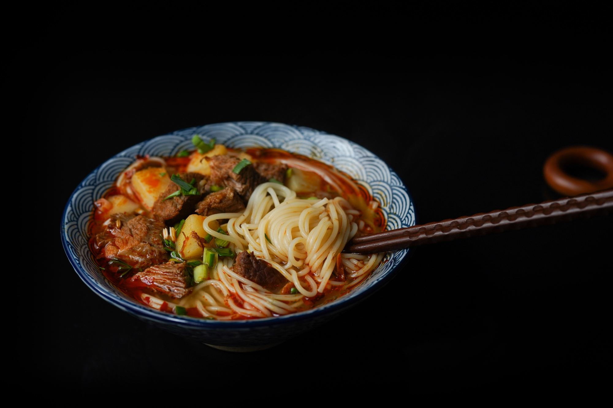
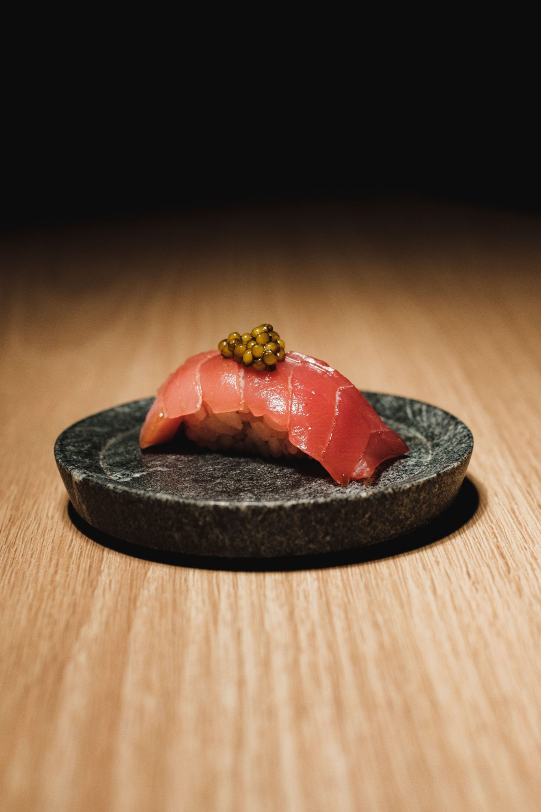
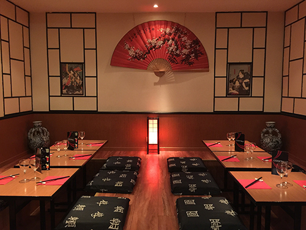

Sport
Sport
La pêche dans l’Aube
Sensibilisation, journées dépollution et pêche « no kill » : la pêche, sport national de l’Aube.
Lire l’article
Gastronomie · Chartres
 Par Yacine M.
Par Yacine M.

Restaurant japonais
Situé en plein cœur de Chartres, ce restaurant vous propose de découvrir la cuisine japonaise dans un cadre typiquement nippon. Ouvert en 2001, Shogun Sushi est le premier restaurant japonais de la ville.
Le chef vous propose une carte mêlant mets traditionnels japonais et recettes innovantes de sushis et makis. Venez également découvrir leurs délicieux desserts japonais.

Une salle traditionnelle
Ce restaurant a pour particularité de disposer d’une salle traditionnelle dans laquelle vous pourrez manger assis sur des coussins. Les plats peuvent aussi être emportés ou livrés à votre domicile et au bureau.
Toute l’équipe du Shogun Sushi est à votre disposition pour vous faire passer un agréable moment.
Continuer la lecture
Sport
Sensibilisation, journées dépollution et pêche « no kill » : la pêche, sport national de l’Aube.
Lire l’article Art
Art
Un voyage dans la région bordelaise à travers ses secrets, son histoire, son art et son architecture.
Lire l’article Écologie
Écologie
Un tour d’horizon libournais des acteurs qui réparent, recyclent et revalorisent au quotidien.
Lire l’article